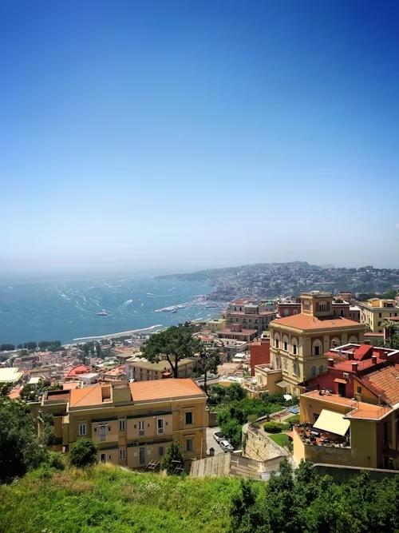
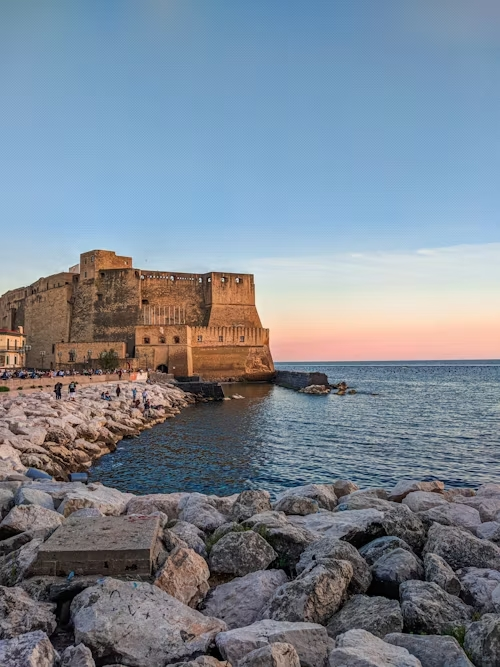

Orígenes
En un rincón de Nápoles, un joven llamado Luca soñaba con compartir los sabores auténticos de su ciudad natal con el mundo. Desde pequeño, había ayudado a su abuela en la cocina, donde aprendió los secretos de la pizza margherita y la pasta alla genovese. Su pasión por la gastronomía creció con los años, y tras estudiar cocina y trabajar en varios restaurantes, decidió abrir su propio lugar en el corazón de la ciudad. Lo llamó "La Napolitana", un restaurante sencillo pero lleno de tradición, donde los aromas del horno de leña se mezclaban con las risas y conversaciones de los clientes.

Nuestra tradición
El local, modesto pero acogedor, se convirtió rápidamente en un refugio para los amantes de la buena comida. Luca no solo ofrecía platos típicos como la pizza de mariscos o la sfogliatella, sino que también compartía historias de su infancia y las tradiciones que habían inspirado cada receta. Los turistas se enamoraban de su ambiente auténtico, mientras que los napolitanos encontraban en cada bocado un pedazo de su hogar. La fama del restaurante creció, y pronto Luca empezó a recibir visitas de chefs y críticos gastronómicos de todo el mundo.
La Napolitana actualmente
Con el tiempo, "La Napolitana" no solo se consolidó como un referente de la comida napolitana en Nápoles, sino que Luca se convirtió en un embajador de la cultura culinaria de su ciudad. Aunque su restaurante era reconocido por la calidad de sus platos, lo que realmente lo hacía especial era el alma que Luca le ponía, como si cada plato contara una historia sobre su tierra, sus raíces y el amor por su gente.
